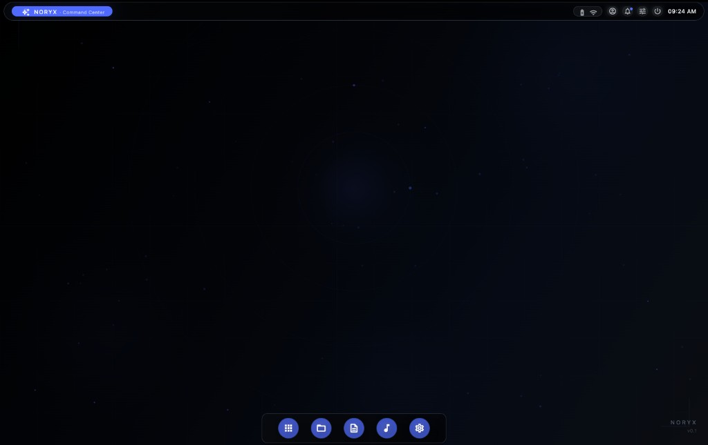

Infrastructure for
intelligent systems.
NORYX Technologies is building the next generation of personal computing — starting with an AI-native operating system designed from the ground up for calm, speed, and privacy.
Why we started.
"Every OS I used felt like it was built for someone else's workflow. I wanted one that felt like it was built for mine — calm, fast, and smart enough to stay out of the way."
NORYX started as a frustration. Modern operating systems are bloated, noisy, and architecturally stuck in the past. AI was being bolted onto 25-year-old interfaces instead of being woven into the system itself.
We're a small team of systems engineers, AI researchers, and designers. We believe the next operating system won't come from patching the old ones — it has to be built from scratch with intelligence, privacy, and calm as first principles.
NORYX Technologies is that mission. We're building infrastructure for intelligent systems — starting with an operating system, and expanding into the tools and platforms that make personal computing genuinely better.
What we're building.
Our first product is an operating system that rethinks personal computing from the kernel up.
NoryxOS
An AI-native operating system built from the ground up. Not AI bolted onto old interfaces — a new system layer where intelligence lives in the fabric of the OS itself. Calm Glass design, on-device AI, immutable updates, and full app compatibility.

What we believe.
These principles guide every decision we make — from architecture choices to pixel placement.
Privacy by default
Zero telemetry out of the box. Your data stays on your machine. We never build business models that require surveillance.
Speed as a feature
Cold boot under 10 seconds. Sub-400ms app launches. Performance isn't an optimization — it's a core design constraint.
Calm technology
Software should reduce cognitive load, not add to it. Every interface we ship is designed to feel effortless and unobtrusive.
Build from scratch
Real progress comes from rethinking systems at the foundation. We don't patch — we rebuild with modern constraints in mind.
Intelligence everywhere
AI shouldn't be an app you open — it should be woven into the system itself. Local, context-aware, always available.
Open by conviction
Core components open-sourced under MPL 2.0. An open SDK with permissive licensing. We build in the open because better systems emerge that way.
"We're not building another Linux distro. We're building a new foundation for personal computing."
NORYX Technologies LLC was founded with a single conviction: the operating system is the most important software most people use, and it hasn't been fundamentally rethought in decades.
We're a small, focused team working at the intersection of systems engineering, AI research, and human-computer interaction. Every person on the team has shipped production systems — and every one of us believes the industry is ready for something new.
We're currently building in stealth and targeting a developer preview in Q4 2026. If you want to be part of what we're building, we're hiring.
Let's talk.
Whether you're interested in our products, want to join the team, or just want to say hello — we'd love to hear from you.